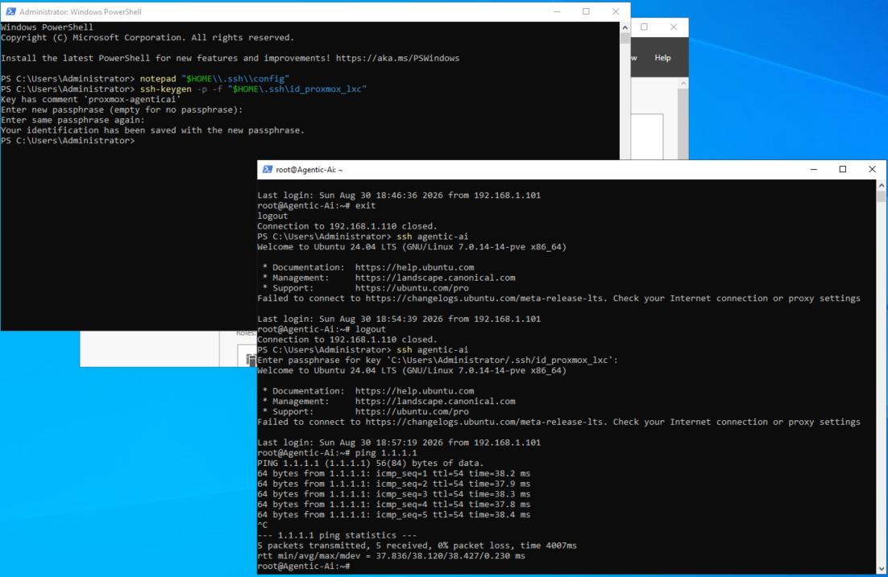

Proxmox LXC SSH Setup Guide
Configure passwordless SSH access for Proxmox LXC containers using Ed25519 key pairs for secure, key-based authentication.
This guide walks through setting up passwordless SSH access for Proxmox LXC containers using Ed25519 key pairs. This provides secure, automated access without password-based authentication.
Step 1: Generate SSH Key Pair
On your host machine (or management workstation), generate a new Ed25519 key pair:
ssh-keygen -t ed25519 -f "$HOME/.ssh/id_proxmox_lxc" -C "proxmox-lxc-key"On Windows, use PowerShell with escaped backslashes:
ssh-keygen -t ed25519 -f "$HOME\.ssh\id_proxmox_lxc" -C "proxmox-lxc-key"This creates two files:
id_proxmox_lxc— Private key (keep this secure, never share)id_proxmox_lxc.pub— Public key (paste into Proxmox)
Step 2: Extract the Public Key
Display the public key content:
cat "$HOME/.ssh/id_proxmox_lxc.pub"
Copy the entire output (it should start with ssh-ed25519).
Step 3: Configure LXC Container in Proxmox
When creating a new LXC container in Proxmox, during the setup wizard:
- Navigate to the SSH public key field.
- Paste the contents of your
id_proxmox_lxc.pubfile. - Complete the container creation.

Step 4: Access the Container
Once the container is created and running, SSH into it using your private key:
ssh -i "$HOME/.ssh/id_proxmox_lxc" root@<CONTAINER_IP>
Replace <CONTAINER_IP> with the container's IP address (find this in Proxmox under the container's Network settings).
~/.ssh/config file for easier access:
Host proxmox-lxc
HostName <CONTAINER_IP>
User root
IdentityFile ~/.ssh/id_proxmox_lxc
StrictHostKeyChecking accept-newssh proxmox-lxc
Step 5: Verify Key-Based Authentication Works
Once connected, verify that the public key is installed in the container:
cat ~/.ssh/authorized_keysYou should see your Ed25519 public key listed.
Ed25519 keys are more secure than traditional RSA keys and are the recommended standard for new SSH key generation. They offer better performance and stronger cryptography.
Troubleshooting
- Permission Denied (publickey): Ensure the public key was correctly pasted during container creation. Recreate the container with the correct key if needed.
- Cannot resolve hostname: Verify the container is running and has a valid IP address assigned by DHCP or static configuration.
- Connection timeout: Ensure network connectivity between your host and the container. Check Proxmox network settings and firewall rules.